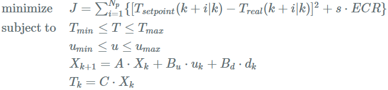
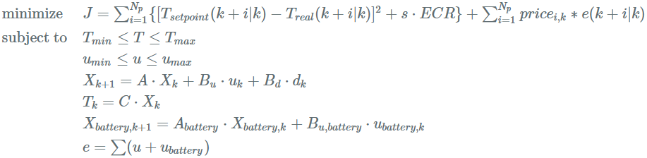
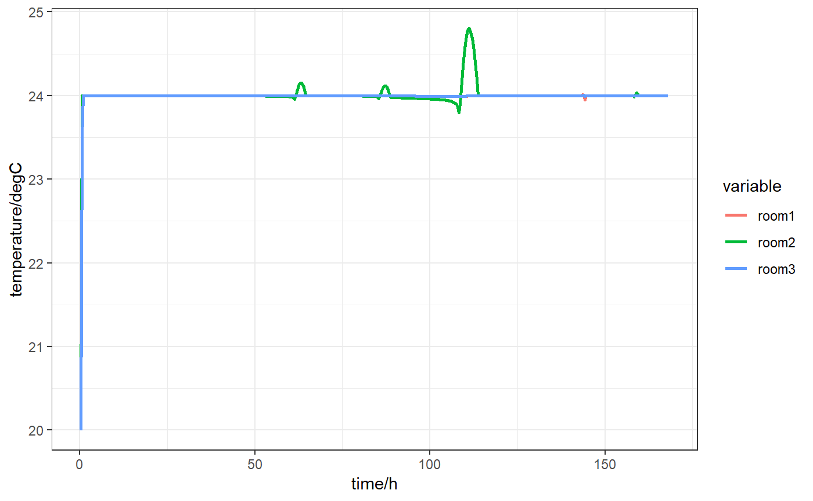

An R module aimed at MPC (model predictive control), EMPC (economics model predictive control), EMPC-based Demand Response and Energyhub modeling for buildings.
- Framework for Building Simulation in R
- How MPC in R
- Algorithm
- Note
- Features
- Installation
- Documentation
- Support

How MPC in R
In my opinion, building MPC is a specific convex optimization problem which can be solved with the linear programming algorithm. CVXR allows R users to formulate convex optimization problems in a natural mathematival syntax rather than the restrictive standard form. Therefore, EMPC is developed based on CVXR. Besides, ECOS slover, a lightweight conic solver for SOCP(second-order cone programming), is chosen as default solver. Gratitude is extended to Anqi Fu and Balasubramanian Narasimhan for their amazing packages CVXR and ECOSolver(an R interface for ECOS), repectively.
Algorithm
MPC: For every iteration in comfort control (i.e. indoor temperature control), the optimization problem is concluded as:

EMPC:For every iteration in cost control (i.e. minimize the electricity cost), the optimization problem is concluded as:

EMPC: If there is a storage or generation component(i.e. simple battery), the optimization problem is concluded as:

Note
EMPC is only available for simulating discrete-time linear time-invariant systems at present.
In order to obtain discrete state-space model and transform it bettween different timesteps,
c2dandd2cfunctions are provided.
Features
- Time-variant constraints, such as temperature range, power/energy inputs are supported.
- Two control mode, namely comfort control and cost control are provided.
- Simple battery and lead-acid battery object models are available.
- Directly add storage component and generation component to your building component.
In order to make the package easy-to-use for researchers in building/energy fields, objective function is warpped. Therefore, the users cannot change the optimized object.
Installation
EMPC is currently not on CRAN. You can install EMPC from Github with:
devtools::install_github("jywang2016/EMPC")Documentation
Three examples are given in the test file. Here is the example#1:comfort/cost control with time-variant constrains.
#rm(list = ls())
library(EMPC)
library(dplyr)
## ----echo=TRUE, message=FALSE, warning=FALSE-----------------------------
load("./inst/extdata/ssM.Rdata")
# state-space model of building
ssmodel <- list(A = ssM$A %>% as.matrix(),
Bu = ssM$Bu %>% as.matrix(),
Bd = ssM$Bd %>% as.matrix(),
C = ssM$C %>% as.matrix())
## ------------------------------------------------------------------------
mpc2 <- mpc$new()
mpc2$initialize() #initialize building
mpc2$building$setvalue(ssmodel = ssmodel,
disturbance = as.matrix(ssM$Disturbance),
timestep = as.matrix(ssM$timestep),
x0 = as.matrix(ssM$x0),
continuous = F)
mpc2$building$parameters$ssM
## ------------------------------------------------------------------------
N <- 72 #prediction horizon
Tsim <- 504 #simulation/control horizon
nu <- ncol(ssM$Bu)
ny <- nrow(ssM$C)
ECR <- 1e6
cost <- matrix(0.2, ncol = nu, nrow = (N + Tsim))
ymax <- matrix(26, nrow = ny, ncol = (N + Tsim))
ymin <- matrix(22, nrow = ny, ncol = (N + Tsim))
yref <- matrix(24, nrow = ny, ncol = (N + Tsim))
umax <- matrix(15, nrow = ny, ncol = (N + Tsim))
umin <- matrix(0 , nrow = ny, ncol = (N + Tsim))
timestep <- ssM$timestep %>% as.numeric()
time <- (1:nrow(cost))*timestep
for (i in time) {
ifelse(i %% 86400 > 10*3600 & i %% 86400 <=16*3600,
cost[i/timestep,] <- 0.2,
cost[i/timestep,] <- 0.04)
ifelse(i %% 86400 <= 8*3600 | i %% 86400 > 18*3600,
ymax[,i/timestep] <- 30,
ymax[,i/timestep] <- 26)
ifelse(i %% 86400 <= 8*3600 | i %% 86400 > 18*3600,
ymin[,i/timestep] <- 18,
ymin[,i/timestep] <- 22)
}
## ------------------------------------------------------------------------
mpc2$set_parameters(N = N,
Tsim = Tsim,
obj = "comfort", #comfort objective function
cost = cost,
ymin = ymin,
ymax = ymax,
yref = yref,
ECR = ECR,
umax = umax,
umin = umin)
mpc2$print_para() ##use for print prediction horizon, control horizon, and ssM is continuous or not
mpc2$set_mpc_constraint()
## ------------------------------------------------------------------------
solu <- mpc2$solve_mpc()
## ------------------------------------------------------------------------
temp <- data.frame(time = 1:Tsim,
room1 = t(solu$Y)[,1],
room2 = t(solu$Y)[,2],
room3 = t(solu$Y)[,3])
ele <- data.frame(time = 1:Tsim,
room1 = t(solu$U)[,1],
room2 = t(solu$U)[,2],
room3 = t(solu$U)[,3])
library(reshape2)
library(ggplot2)
hfactor <- 3600/as.numeric(ssM$timestep )
temp %>% melt(id = "time") %>%
ggplot(aes(x = time/hfactor , y = value ,color = variable)) +
geom_line(size = 1) +
theme_bw()+
xlab("time/h") + ylab("temperature/degC")
ele %>% melt(id = "time") %>%
ggplot(aes(x = time/hfactor , y = value ,color = variable)) +
geom_line(size = 1) +
theme_bw()+
xlab("time/h") + ylab("electricity/kw")

## ------------------------------------------------------------------------
mpc2$set_parameters(N = N,
Tsim = Tsim,
obj = "cost",
cost = cost,
ymin = ymin,
ymax = ymax,
yref = yref,
ECR = ECR,
umax = umax,
umin = umin)
mpc2$print_para()
mpc2$set_mpc_constraint()
## ------------------------------------------------------------------------
solu <- mpc2$solve_mpc(control = ecos.control(maxit = 500L,feastol = 5e-6,reltol = 5e-5))
## ------------------------------------------------------------------------
temp <- data.frame(time = 1:Tsim,
room1 = t(solu$Y)[,1],
room2 = t(solu$Y)[,2],
room3 = t(solu$Y)[,3])
ele <- data.frame(time = 1:Tsim,
room1 = t(solu$U)[,1],
room2 = t(solu$U)[,2],
room3 = t(solu$U)[,3])
library(reshape2)
library(ggplot2)
hfactor <- 3600/as.numeric(ssM$timestep )
temp %>% melt(id = "time") %>%
ggplot(aes(x = time/hfactor , y = value ,color = variable)) +
geom_line(size = 1) +
theme_bw()+
xlab("time/h") + ylab("temperature/degC")
ele %>% melt(id = "time") %>%
ggplot(aes(x = time/hfactor , y = value ,color = variable)) +
geom_line(size = 1) +
theme_bw()+
xlab("time/h") + ylab("electricity/kw")

To be continued…
Support
Open an issue on the EMPC Github page.